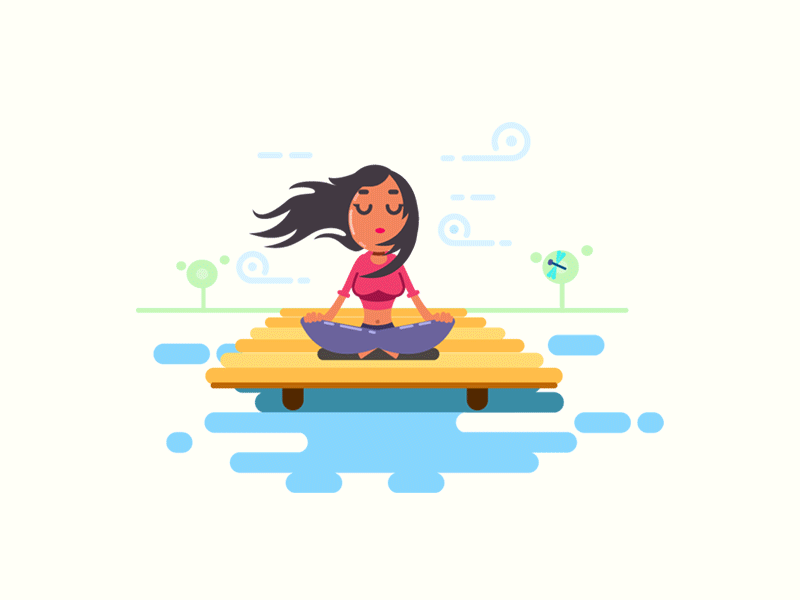

Teama de eşec
4.Metode de remediere
Teama de esec este o problema cu care o mare parte din populatie se confrunta, chiar daca putini sunt constienti de acest lucru.Dar desi poate avea un impact puternic, teama de esec poate fi combatuta prin metodele potrivite.
4.1.Acceptare esecului:
Înțelegeți și așteptați-vă că uneori veți eșuă. Realizați că sunteți om și oamenii fac greșeli. Înainte că oricare dintre noi să invătăm cum să mergem, ne-am târât. Ne-am ridicat, am căzut, am urcat din nou și am continuat procesul pană când am putut merge bine. Nu luați personal eșecul. În schimb, consideră-l o temelie. Să invătăm din eșec și apoi să aplicăm ceea ce am invătat în următoarele situații cu care ne confruntăm în viată. Să nu mai considerăm eșecul o slăbiciune. Acest lucru ne va împiedica să obținem succesul dorit. Apreciați beneficiile eșecului.Șansele de a reuși chiar din prima încercare sunt mici spre inexistente. Cu cât încercați sau experimentați mai mult, cu atât vă veţi descurca mai bine.
4.2.A cere ajutor:
Ca părinte poți observa manifestarea unei temeri fată de eșec la copilul tău.În acest caz cel mai bun remediu este acordarea sprijinului și acceptarea problemei lui. Dacă simți că nu poți să scapi de această frică, poți apela la un cadru specializat în acest domeniu precum un psiholog, care îți poate detectă cu precizie sursă temerii și îți poate oferi indicații specifice pentru cazul tău.
4.3.Metode medicamentoase:
Pe lângă celalalte metode, există medicamente care pot ajuta.Acestea sunt folosite în general pe termen scurt în situații de anxietate și panică. Beta-blocantele sunt un exemplu de medicamentație care blochează adrenalina din a crește pulsul și tremuratul.De asemenea sedativele pot ajuta, reducând anxietatea și ajutând pacientul să se relaxeze. Cei care folosesc acest remediu îl folosesc predominant pentru un eveniment important precum un discurs sau o intalire importantă.Dezavantajul folosirii metodelor medicamentoase este posibilă producere a unei dependențe când pacientul se foleseste de acestea în exces.
4.4.Metodele de relaxare:
Dacă descoperi că frica ta intervine în concentrare, sau te imobilizează, atunci există câteva exerciții care pot ajuta corpul să se liniștească, reducând nivelul de stres. O tehnică bine cunoscută este meditația.Cu sensiuni de scurtă durată, dar practicată regulat această poate avea beneficii majore în luptă cu teamă de eșec. Alte metode ce pot fi folosite:yoga, vizualizarea, ascultarea muzicii.
